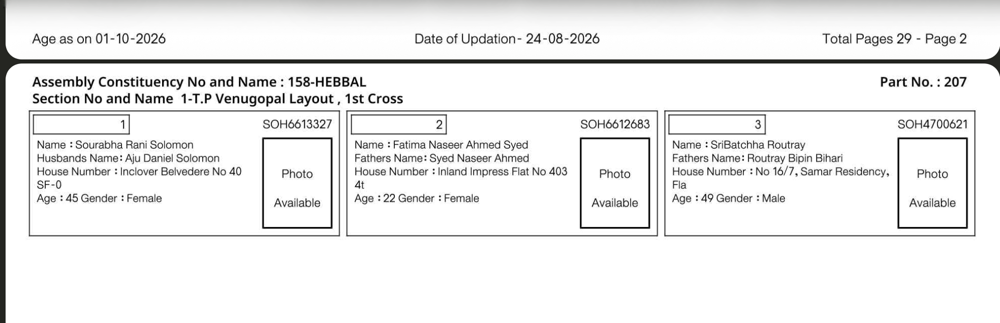
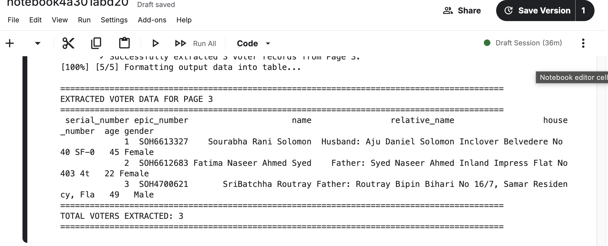
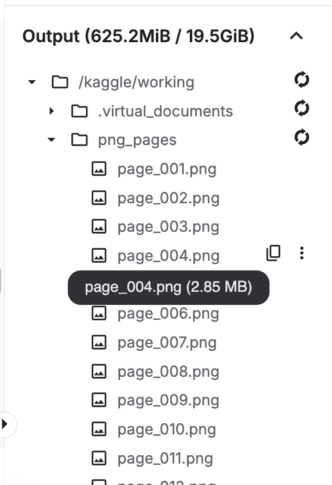

End-to-end automated pipeline for extracting structured voter records from Electoral Roll PDFs using Kaggle compute and Gemini Vision API.
Raw Image:
Image from Kaggle Output Console :
Image from Kaggle Output working directory showing the png files it created.
flowchart TD
A[📄 Electoral Roll PDF] -->|Input PDF| B[⚡ Kaggle Environment]
subgraph Kaggle Pipeline
B --> C[✂️ Split PDF into Pages]
C --> D[🖼️ High-Res PNG Images]
D --> E[🔍 Gemini 3.8 Flash Vision OCR]
E -->|Extract JSON Records| F[⚙️ Data Normalization & Structuring]
end
F --> G[📊 Structured CSV Export]
F --> H[🖥️ Console Table Output]
Scans Kaggle's input workspace (/kaggle/input/) for target Electoral Roll PDFs and programmatically initializes system binaries like poppler-utils.
Uses pdf2image to chop multi-page PDF documents into high-resolution PNG page images at 300 DPI for clean OCR reading.
Sends image pages to Gemini 3.8 Flash with structured JSON schemas to parse fields: Serial Number, EPIC Number, Name, Relative Name, House/Address, Age, and Gender.
Converts raw JSON payload into structured Pandas DataFrames, prints live progress tracking logs, and outputs finalized tables or CSV files to /kaggle/working/.